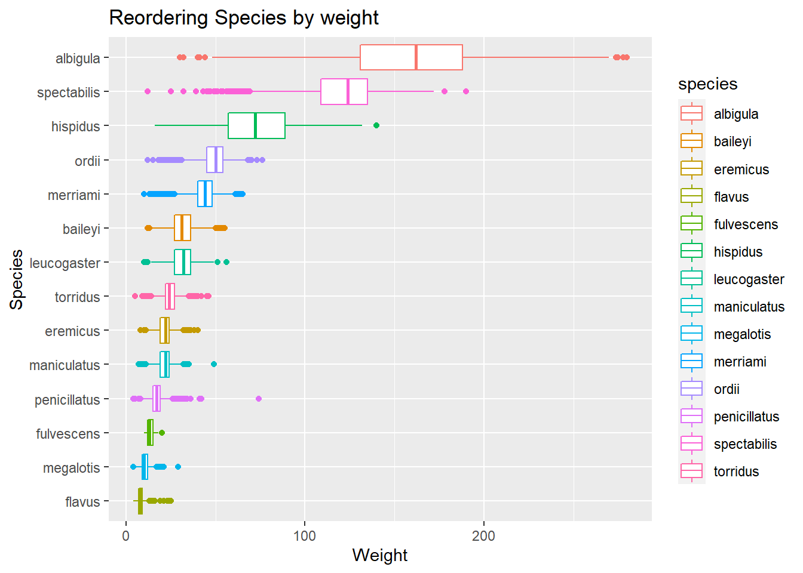
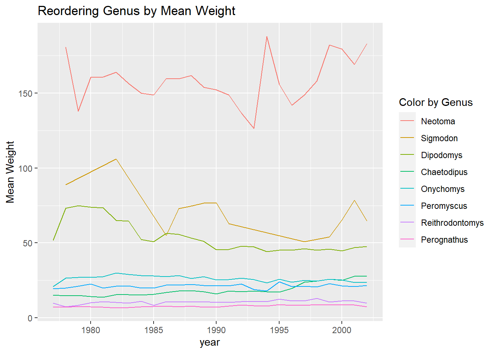
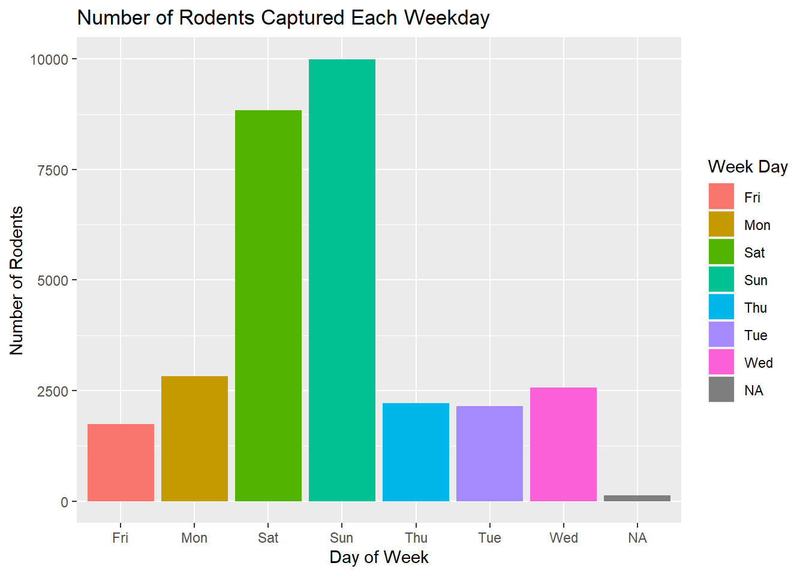
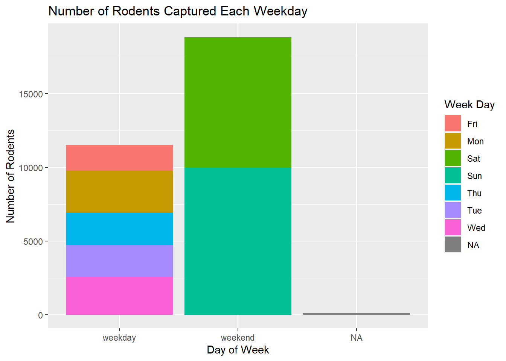

library(tidyverse)
library(here)
library(forcats)Lab 5
surveys <- read_csv(here::here("supporting_artifacts", "surveys.csv"))
surveys# A tibble: 30,463 × 15
record…¹ month day year plot_id speci…² sex hindf…³ weight date day_o…⁴
<dbl> <dbl> <dbl> <dbl> <dbl> <chr> <chr> <dbl> <dbl> <chr> <chr>
1 63 8 19 1977 3 DM M 35 40 8/19… Fri
2 64 8 19 1977 7 DM M 37 48 8/19… Fri
3 65 8 19 1977 4 DM F 34 29 8/19… Fri
4 66 8 19 1977 4 DM F 35 46 8/19… Fri
5 67 8 19 1977 7 DM M 35 36 8/19… Fri
6 68 8 19 1977 8 DO F 32 52 8/19… Fri
7 69 8 19 1977 2 PF M 15 8 8/19… Fri
8 71 8 19 1977 7 DM F 36 35 8/19… Fri
9 74 8 19 1977 8 PF M 12 7 8/19… Fri
10 75 8 19 1977 8 DM F 32 22 8/19… Fri
# … with 30,453 more rows, 4 more variables: plot_type <chr>, genus <chr>,
# species <chr>, taxa <chr>, and abbreviated variable names ¹record_id,
# ²species_id, ³hindfoot_length, ⁴day_of_weeksurveys |>
mutate(species = fct_reorder(species, weight, .desc = TRUE))# A tibble: 30,463 × 15
record…¹ month day year plot_id speci…² sex hindf…³ weight date day_o…⁴
<dbl> <dbl> <dbl> <dbl> <dbl> <chr> <chr> <dbl> <dbl> <chr> <chr>
1 63 8 19 1977 3 DM M 35 40 8/19… Fri
2 64 8 19 1977 7 DM M 37 48 8/19… Fri
3 65 8 19 1977 4 DM F 34 29 8/19… Fri
4 66 8 19 1977 4 DM F 35 46 8/19… Fri
5 67 8 19 1977 7 DM M 35 36 8/19… Fri
6 68 8 19 1977 8 DO F 32 52 8/19… Fri
7 69 8 19 1977 2 PF M 15 8 8/19… Fri
8 71 8 19 1977 7 DM F 36 35 8/19… Fri
9 74 8 19 1977 8 PF M 12 7 8/19… Fri
10 75 8 19 1977 8 DM F 32 22 8/19… Fri
# … with 30,453 more rows, 4 more variables: plot_type <chr>, genus <chr>,
# species <fct>, taxa <chr>, and abbreviated variable names ¹record_id,
# ²species_id, ³hindfoot_length, ⁴day_of_week ggplot(data = surveys,
mapping = aes(y = reorder(species, weight),
x = weight,
color = species)) +
geom_boxplot() +
labs(title = "Reordering Species by weight", x = "Weight", y = "Species")
surveys |>
select(weight, genus, year) |>
group_by(genus, year) |>
summarize(weight = mean(weight)) |>
ggplot(mapping = aes(y = weight,
x = year,
col = fct_reorder2(genus, year, weight, .desc = TRUE))) +
geom_line() +
labs(title = "Reordering Genus by Mean Weight",
y = "Mean Weight",
col = "Color by Genus")
surveys |>
select(day_of_week) |>
count(day_of_week) |>
ggplot(mapping = aes(x = fct_relevel(day_of_week, c("Monday", "Tuesday",
"Wednesday", "Thursday",
"Friday",
"Saturday", "Sunday")),
y = n,
fill = day_of_week)) +
geom_bar(stat = "identity") +
labs(x = "Day of Week",
y = "Number of Rodents",
title = "Number of Rodents Captured Each Weekday",
fill = "Week Day")
surveys |>
select(day_of_week) |>
count(day_of_week) |>
ggplot(mapping = aes(x = fct_collapse(day_of_week,
weekday = c("Mon", "Tue",
"Wed", "Thu",
"Fri"),
weekend = c("Sat", "Sun")),
y = n,
fill = day_of_week)) +
geom_bar(stat = "identity") +
labs(x = "Day of Week",
y = "Number of Rodents",
title = "Number of Rodents Captured Each Weekday",
fill = "Week Day")